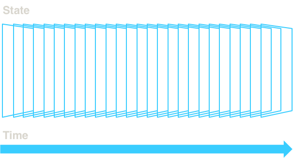
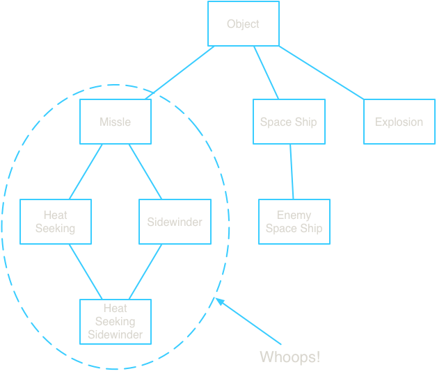
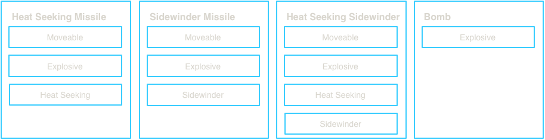
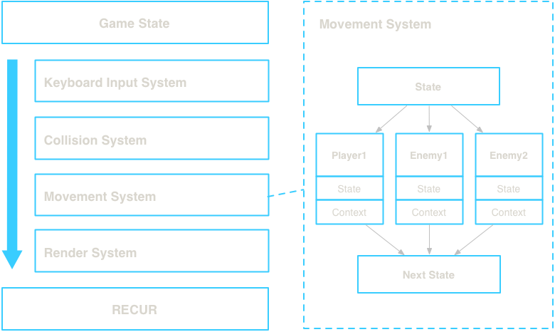
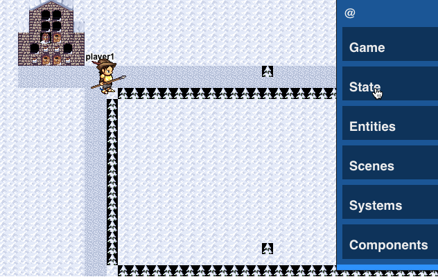
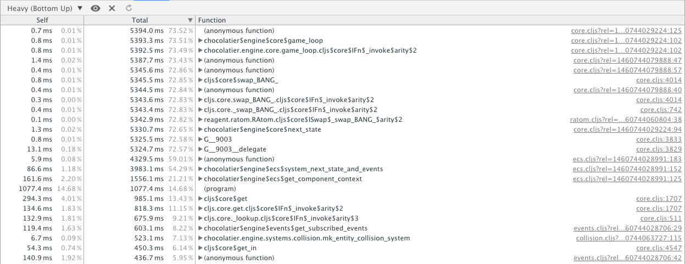
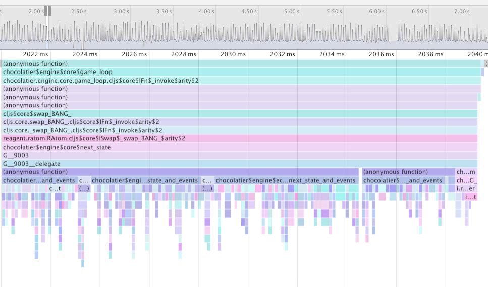

Why not use Unity/Cocos2d/Phaser/etc?
class Player: x = 0 y = 0 def move_towards(self): ... # And more methods that mutate player state class Game: def __init__(self): self.player = Player() self.enemies = [Enemy() for i in range(100)] def run(self): for e in enemies: if enemy.y - player.y < enemy.site_range: enemy.move_towards(player.x, player.y) if game_pad.is_pressed('left'): player.x = player.x + 1 player.y = player.y + 1 elif: ... # And more intertwined orchestration of objects


{:player1 [:controllable :moveable :collidable]}
{:moveable f}
{:movement f}
{:title-screen [:menu :input :render]
:game [:input :movement :ai]}
Game state is a hashmap that has our entities, systems, components
{:entities {:player1 [:move :animate]}
:components {:move move :animate animate}
:systems {:movement {:component :move :fn move-system}
:animation {:component :animate :fn animation-system}}
:scene [:movement :animation]
:state {:move {:player1 {:x 1 :y 1}}
:animation {:player1 {:frame 0}}}}
Get all system functions in the order of the scene
(map #(get-in state [:systems %]) (:scene state))
Compose all system functions and call with state
((comp s1 s2 s3) state)
Recur!

(defn blob-component [component-state] (if (get component-state :colliding?) (if (collided-with-enemy? component-state) (update component-state :health dec) (if (get component-state :moving?) (assoc component-state :offset [0 0]) (assoc component-state :offset (get component-state :move-offset)))) component-state)
(defn get-events [state selectors] (get-in state selectors)) (defn mk-event [msg selectors] {:selectors selectors :msg msg}) (defn emit-event [state msg selectors] (let [event (mk-event msg selectors)] (update-in state selectors conj event)))
Example
(emit-event {} {:foo :bar} [:collision :player1])
>> {:collision
.. {:player1
.. [{:selectors [:collision :player1],
.. :msg {:foo :bar}}]}}
(defn collision [component-state context] (if-let [collider (colliding? component-state)] [component-state (mk-event {:colliding collider} [:collision entity-id])] component-state)) (defn movement [component-state {:keys [inbox]}] (if (collision-event? inbox) [component-state (mk-event {:offset-x 0 :offset-y 0} [:move-change entity-id])] component-state)) (defn position [component-state {:keys [inbox]}] (if-let (move-event? inbox) (update component-state :pos (calculate-coords inbox)) component-state)) (defn health [component-state {:keys [inbox]}] (if-let (enemy-collision-event? inbox) (update component-state :hitpoints dec) component-state))
{:moveable {:fn f
:select-components [[:position :player1]]}}
(game-state {}
{:type :scene
:id :default
:systems [:s1]}
{:type :system
:id :positioning
:fn f1
:components [:position]}
{:type :component
:id :position
:fn f1}
{:type :entity
:id :e1
:components [{:id :position
:state {:x 20 :y 20}}]})
{:type :entity
:id :e1
:components [{:id :position
:state {:x 20 :y 20}}]}
(defmulti mk-state (fn [state spec] (:type spec))) (defmethod mk-state :entity [state {:keys [id components]}] ...) (defmethod mk-state :component [state {:keys [id fn]}] ...) (defmethod mk-state :system [state {:keys [id fn]}] ...) (defn game-state [state & specs] (reduce #(mk-state %1 %2) state specs))
(defmethod mk-state :system [state {:keys [id fn component]}] (if component (system state id fn) (default-system state id component))) ;; The spec to avoid having to write the same system function repeatedly {:type :system :id :s1 :component {:id :c1 :fn f1}}
Don't construct the entire game world, visually test in the browser to simulate behavior https://github.com/bhauman/devcards

Since the game state is a nested datastructure, we can auto generate a live inspector using Reagent
(defprotocol InspectComponent "Provides methods for returning a Reagent component for inspection" (inspect [this label key-path app-state state] "Returns a component for inspecting this type")) (extend-type PersistentHashMap InspectComponent (inspect [this label key-path state] (let [child-paths (map #(conj key-path %) (keys this))] [:div {:on-click (handle-show-path child-paths)} label (for [[k v] (sort-by (comp name first) (seq this))] [inspect v (name k) (conj key-path k) state])])))
Use Ring-like middleware to wrap the game loop with your own tooling
(defn wrap-copy-state-to-atom "Copy the latest game state to the copy-atom so it can be inspected in REPL" [f copy-atom] (fn [state] (let [next-state (f state)] (reset! copy-atom next-state))))


(defn foo [x & args] (body ..))
(defn foo ([x] (foo x nil)) ([x y] (bar x y)))
(apply (partial x) [y z])
;; Bad (empty? []) ;; Good (seq [])
;; Bad (= :a :a) ;; Good (keyword-identical? :a :a)
;; Bad (defmulti foo (fn [& args] ...)) ;; Good, but less elegant (condp = x ...) ;; Fastest?? (defprotocol Fooable (foo [this x])) (deftype Thing Fooable (foo [this x] ...))
If a function is used multiple times with the same result, def it
;; Bad, extra function call every time (defn foo [x] (conj (range 10) x)) ;; Good, skip the extra calls (def numbers (range 10)) (defn foo [x] (conj numbers x))
;; Bad, procedurally building up multiple collections (let [v1 (map inc numbers) v2 (filter pos? v1) v3 (map #(* 2 %) v2)] (into {} (map #(vector % (inc %)) v3))) ;; Good, do it all in one shot using transients (loop [nums numbers accum (transient {})] (let [n (first numbers)] (if n (recur (rest nums) (assoc! accum n (inc n))) accum)))
Thank you! @alexkehayias https://github.com/alexkehayias/chocolatier
Created by Alex Kehayias